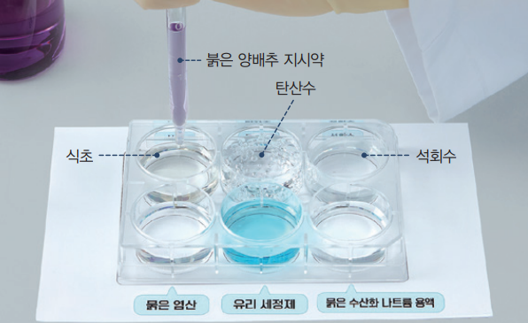

1번
다음은 붉은 양배추 지시약을 이용하여 용액을 분류하는 실험입니다. 아래 탐구 결과 보고서의 내용 중 옳지 않은 것을 두 가지 고르세요.

개요
실험 결과
개요
식초
탄산수
석회수
묽은
염산
유리
세정제
묽은 수산화 나트륨 용액
색깔 변화
붉은색
붉은색
연한
푸른색
붉은색
푸른색
노란색
실험을 통해 알게된 점
붉은색으로 변한 용액은 식초, 탄산수, 묽은 염산이다.
푸른색이나 노란색으로 변한 용액은 석회수, 유리 세정제, 묽은 수산화 나트륨 용액이다.
붉은색 계열로 변하게 한 용액을 푸른색 리트머스 종이에 떨어트리면 종이가 붉게 변한다.
붉은색 계열로 변하게 한 용액에 페놀프탈레인 용액을 떨어트리면 페놀프탈레인 용액이 붉게 변한다.
푸른색이나 노란색으로 변하게 한 용액에 페놀프탈레인 용액을 떨어트리면 페놀프탈레인 용액이 푸르게 변한다.